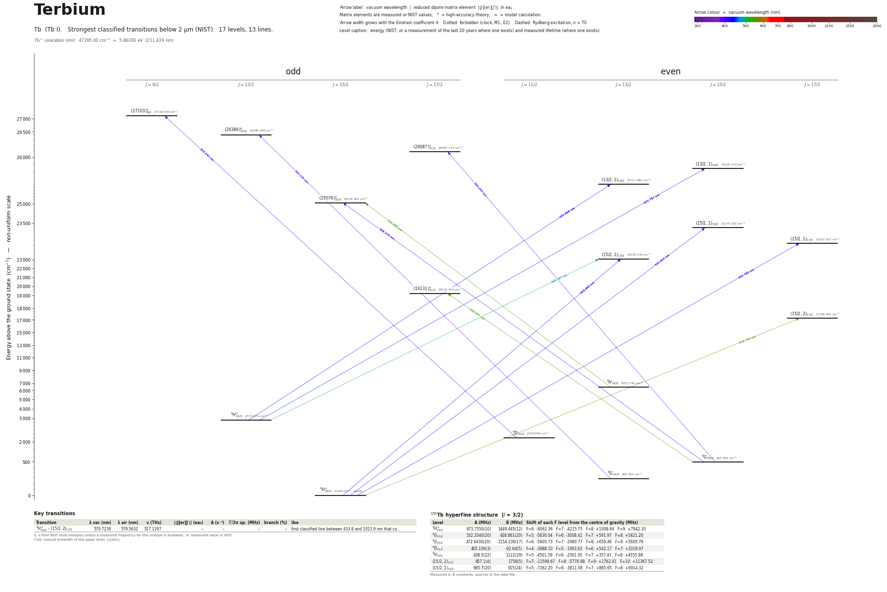

Terbium energy level diagram
Energy levels and transitions of neutral terbium (Tb I): the 13 strongest classified lines below 2 µm from the NIST Atomic Spectra Database and the 17 levels they connect, each line with its vacuum wavelength, frequency and, for 0 of them, the reduced dipole matrix element derived from the NIST transition rate. Measured lifetimes, transition rates, hyperfine constants and isotope shifts from the literature are included, each with its citation.
Hover a line or a level to isolate it, click to keep it selected. Scroll to zoom, drag to move.

Download: diagram (PDF) diagram (SVG) transitions (CSV) levels (CSV) source code

Key transitions of terbium
| Transition | λ vac (nm) | λ air (nm) | ν (THz) | |⟨J‖er‖J′⟩| (ea₀) | A (s⁻¹) | Γ/2π up. (MHz) | branch (%) | Use |
|---|---|---|---|---|---|---|---|---|
| 6H°15/2 – (15/2,2)17/2 | 579.7239 | 579.5632 | 517.1297 | – | – | – | – | first classified line between 433.8 and 1023.9 nm that co… |
λ, ν from NIST level energies unless a measured frequency for this isotope is available. A: measured value or NIST. Γ/2π: natural linewidth of the upper level, 1/(2πτ).
159Tb hyperfine structure (I = 3/2)
| Level | A (MHz) | B (MHz) | Shift of each F level from the centre of gravity (MHz) |
|---|---|---|---|
| 6H°15/2 | 673.7550(10) | 1449.445(12) | F=6: -8062.36 F=7: -4215.75 F=8: +1008.64 F=9: +7942.10 |
| 8G13/2 | 532.2040(20) | 928.861(20) | F=5: -5630.04 F=6: -3008.42 F=7: +591.97 F=8: +5421.20 |
| 8G15/2 | 472.6430(20) | 1154.239(17) | F=6: -5605.73 F=7: -2989.77 F=8: +659.46 F=9: +5605.79 |
| 8D11/2 | 405.106(3) | -92.64(5) | F=4: -3988.10 F=5: -1903.62 F=6: +542.17 F=7: +3318.97 |
| 8H13/2 | 438.5(22) | 1122(29) | F=5: -4501.59 F=6: -2561.05 F=7: +357.41 F=8: +4555.88 |
| (15/2,2)17/2 | 857.1(4) | 1758(5) | F=7: -11599.67 F=8: -5776.98 F=9: +1762.41 F=10: +11367.52 |
| (15/2,1)13/2 | 685.7(20) | 915(24) | F=5: -7362.20 F=6: -3811.08 F=7: +865.65 F=8: +6914.32 |
Measured A, B constants; sources in the data file.
Listed Tb transitions below 2 µm
| Lower level | Upper level | λ vacuum (nm) | λ air (nm) | ν (THz) | Type | |⟨J‖er‖J′⟩| (ea₀) | A (s⁻¹) | Branching (%) | Source of matrix element / A |
|---|---|---|---|---|---|---|---|---|---|
| 8G13/2 | (26386)°13/2 | 383.1346 | 383.0259 | 782.4730 | E1 | – | – | – | – |
| 8G15/2 | (26087)°17/2 | 390.2431 | 390.1326 | 768.2197 | E1 | – | – | – | – |
| 8D11/2 | (27103)°9/2 | 403.3421 | 403.2281 | 743.2709 | E1 | – | – | – | – |
| 8G15/2 | (25076)°15/2 | 406.2699 | 406.1552 | 737.9145 | E1 | – | – | – | – |
| 6H°15/2 | (15/2,1)15/2 | 432.0043 | 431.8828 | 693.9572 | E1 | – | – | – | – |
| 6H°15/2 | (15/2,1)17/2 | 432.7646 | 432.6429 | 692.7379 | E1 | – | – | – | – |
| 6H°13/2 | (13/2,1)15/2 | 433.7669 | 433.6450 | 691.1372 | E1 | – | – | – | – |
| 6H°15/2 | (15/2,1)13/2 | 433.9632 | 433.8412 | 690.8247 | E1 | – | – | – | – |
| 6H°13/2 | (13/2,1)13/2 | 435.8057 | 435.6832 | 687.9039 | E1 | – | – | – | – |
| 6H°13/2 | (15/2,1)13/2 | 493.2972 | 493.1595 | 607.7319 | E1 | – | – | – | – |
| 8H13/2 | (25076)°15/2 | 534.0594 | 533.9109 | 561.3467 | E1 | – | – | – | – |
| 8G15/2 | (19131)°17/2 | 535.6367 | 535.4878 | 559.6936 | E1 | – | – | – | – |
| 6H°15/2 | (15/2,2)17/2 | 579.7239 | 579.5632 | 517.1297 | E1 | – | – | – | – |
Reduced dipole matrix elements follow the convention A = ω³|d|²/(3πε₀ħc³(2J′+1)), with J′ the upper level. Tags show where a number comes from: measured, NIST compilation, high-accuracy theory, or a model calculation.
Tb energy levels
| Level | Energy (cm⁻¹) | J | Parity | Lifetime | gJ | Hyperfine A (MHz) | Hyperfine B (MHz) | Lifetime source | Hyperfine source |
|---|---|---|---|---|---|---|---|---|---|
| 6H°15/2 | 0.000 | 15/2 | odd | stable | 1.3251 | 673.755 | 1449.44 | – | earlier atomic-beam magnetic-resonance work (Childs, Phys. Rev. A 2, 316 (1970)), as quot… |
| 8G13/2 | 285.500 | 13/2 | even | – | 1.4645 | 532.204 | 928.861 | – | Childs, Phys. Rev. A 2, 316 (1970) (atomic-beam magnetic resonance), as tabulated in Elan… |
| 8G15/2 | 462.080 | 15/2 | even | – | 1.4562 | 472.643 | 1154.24 | – | Childs, Phys. Rev. A 2, 316 (1970) (atomic-beam magnetic resonance), as tabulated in Elan… |
| 8D11/2 | 2310.090 | 11/2 | even | – | 1.5302 | 405.106 | -92.638 | – | Childs, Phys. Rev. A 2, 316 (1970) (atomic-beam magnetic resonance), as tabulated in Elan… |
| 6H°13/2 | 2771.675 | 13/2 | odd | – | 1.2763 | – | – | – | – |
| 8H13/2 | 6351.750 | 13/2 | even | – | 1.35 | 438.5 | 1122 | – | Stefanska, Elantkowska, Ruczkowski, Furmann, J. Quant. Spectrosc. Radiat. Transfer 189, 4… |
| (15/2,2)17/2 | 17249.590 | 17/2 | even | – | – | 857.1 | 1758 | – | Childs, Goodman, J. Opt. Soc. Am. 69, 815 (1979), Table II (laser-fluorescence values) |
| (19131)°17/2 | 19131.450 | 17/2 | odd | – | 1.41 | – | – | – | – |
| (15/2,1)13/2 | 23043.430 | 13/2 | even | – | 1.391 | 685.7 | 915 | – | Stefanska, Furmann, private communication, as tabulated in Elantkowska, Ruczkowski, Sikor… |
| (15/2,1)17/2 | 23107.250 | 17/2 | even | – | 1.289 | – | – | – | – |
| (15/2,1)15/2 | 23147.920 | 15/2 | even | – | 1.339 | – | – | – | – |
| (25076)°15/2 | 25076.260 | 15/2 | odd | – | 1.42 | – | – | – | – |
| (13/2,1)13/2 | 25717.680 | 13/2 | even | – | 1.3 | – | – | – | – |
| (13/2,1)15/2 | 25825.530 | 15/2 | even | – | 1.246 | – | – | – | – |
| (26087)°17/2 | 26087.130 | 17/2 | odd | – | 1.406 | – | – | – | – |
| (26386)°13/2 | 26385.990 | 13/2 | odd | – | – | – | – | – | – |
| (27103)°9/2 | 27102.940 | 9/2 | odd | – | – | – | – | – | – |
Tb⁺ ionisation limit 47295.00 cm⁻¹ = 5.86383 eV (211.439 nm)
Sources
- Childs, Goodman, J. Opt. Soc. Am. 69, 815 (1979), Table II (laser-fluorescence values)
- Childs, Phys. Rev. A 2, 316 (1970) (atomic-beam magnetic resonance), as tabulated in Elan…
- NIST ASD level energies
- Stefanska, Elantkowska, Ruczkowski, Furmann, J. Quant. Spectrosc. Radiat. Transfer 189, 4…
- Stefanska, Furmann, private communication, as tabulated in Elantkowska, Ruczkowski, Sikor…
- earlier atomic-beam magnetic-resonance work (Childs, Phys. Rev. A 2, 316 (1970)), as quot…
159Tb is the only stable isotope (I = 3/2), so there are no isotope shifts between stable isotopes. Hyperfine constants: 94 levels now carry A (and mostly B). Sources actually opened: (1) Elantkowska et al., Eur. Phys. J. Plus 132, 455 (2017) (open access; PDF from the Wayback copy of the Springer file, saved as pdf/Tb_Elantkowska_2017.pdf) - its Table 3 compiles all measured A, B of even-parity levels with the original reference per row (Childs 1970; Childs & Goodman 1979; Childs 1992; Furmann et al. 2015, 2016; Stefanska et al. 2017; private communication); these are stored with method 'compilation'. (2) Childs & Goodman, J. Opt. Soc. Am. 69, 815 (1979) and Childs, J. Opt. Soc. Am. B 9, 191 (1992): the tables embedded in the publisher abstract pages, read from Wayback Machine copies (saved as pdf/Tb_Childs_1979.html, pdf/Tb_Childs_1992.html); values measured in those papers are 'experiment'. (3) Arnoult & Gerstenkorn 1966 and Childs et al. 1984, read on the publisher abstract pages in the first pass. Eight levels with hyperfine data from Childs & Goodman 1979 are odd-parity upper levels (17118.72, 17341.92, 17409.62, 18461.87, 19450.45, 19658.41, 21837.92, 22223.87). Sign convention: A, B in MHz as printed. Still no lifetime for Tb I (see not_found). Transition rates: 7 lines from Irvine et al. 2023 (laser-induced-breakdown Saha-Boltzmann estimates, low accuracy, see the note on each entry; 5 of them are lines the site draws); the lifetime x sum(A) check could not be run be
Atoms with measured data
- Lithium-632 levels, 85 lines
- Lithium-732 levels, 85 lines
- Beryllium-917 levels, 26 lines
- Sodium-2336 levels, 106 lines
- Magnesium-2418 levels, 61 lines
- Magnesium-2518 levels, 61 lines
- Potassium-3934 levels, 84 lines
- Potassium-4034 levels, 84 lines
- Potassium-4134 levels, 84 lines
- Calcium-4035 levels, 61 lines
- Calcium-4335 levels, 61 lines
- Rubidium-8536 levels, 94 lines
- Rubidium-8736 levels, 94 lines
- Strontium-8740 levels, 70 lines
- Strontium-8840 levels, 70 lines
- Caesium-13331 levels, 79 lines
- Barium-13744 levels, 89 lines
- Barium-13844 levels, 89 lines
- Dysprosium-16339 levels, 55 lines
- Dysprosium-16439 levels, 55 lines
- Ytterbium-17118 levels, 26 lines
- Ytterbium-17418 levels, 26 lines